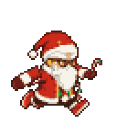
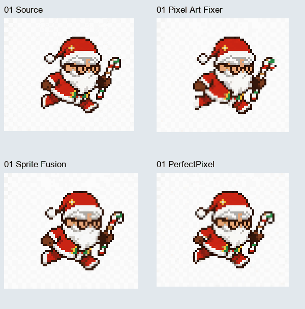

01 / Frame generationA complete loop isn’t enough.
Early frames varied in silhouette, arm occlusion, and limb proportions. The idle pose became the identity reference; I checked individual frames and the motion of the full loop.
Personal exploration / September 2026
One character, through nine actions.
An exploration of character consistency, pixel processing, and an animation workflow built to be revised.
01Process film
Early generations, pixel recovery, 3D models, and the resulting animations.
Original process film.
Chinese on-screen text.
02Three iterations

Early frames varied in silhouette, arm occlusion, and limb proportions. The idle pose became the identity reference; I checked individual frames and the motion of the full loop.

Grid recovery, palette alignment, and outline cleanup sometimes removed features or distorted motion. Side-by-side playback helped me keep useful steps and discard others.
A Blender model provided a common shape for different angles. I refined the head, beard, hat, and profile, then used face textures and manual pixel edits to preserve identity.
03Making & revising
Python scripts manage the two output profiles and cached frames. Material regions are sampled before shading and outlines; face textures remain independently editable. A change to the model, textures, or processing can be rebuilt without repeating every manual step.
I set the reference, compared approaches, and reviewed motion and detail. I drew masks, edited facial pixels, and checked the installed pet against the preview.
AI generated candidates, helped write Blender and image-processing scripts, and produced batch exports and comparison previews. Iterations followed specific visual feedback.
04Where it stands
Nine actions at 32 × 35 and 48 × 52 pixels, with editable models, face assets, scripts, and caches retained. A process film and webpage documented the work for an internal presentation.
Running motion and facial consistency across angles need refinement. This workflow was developed around one character; its applicability to other characters has not been evaluated.
Character reference: the Lao Fu Zi Santa skin. The character design is not original. This personal study presents my production workflow, tooling, and iteration process.